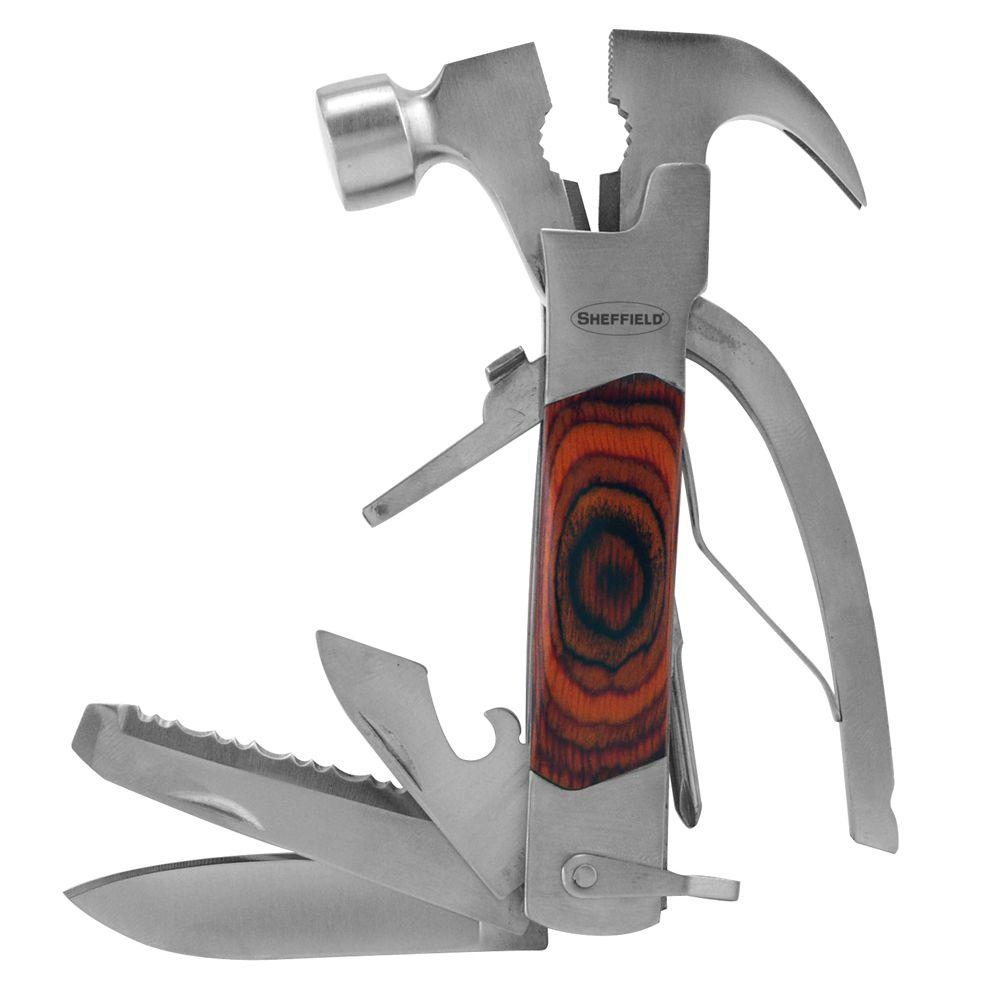
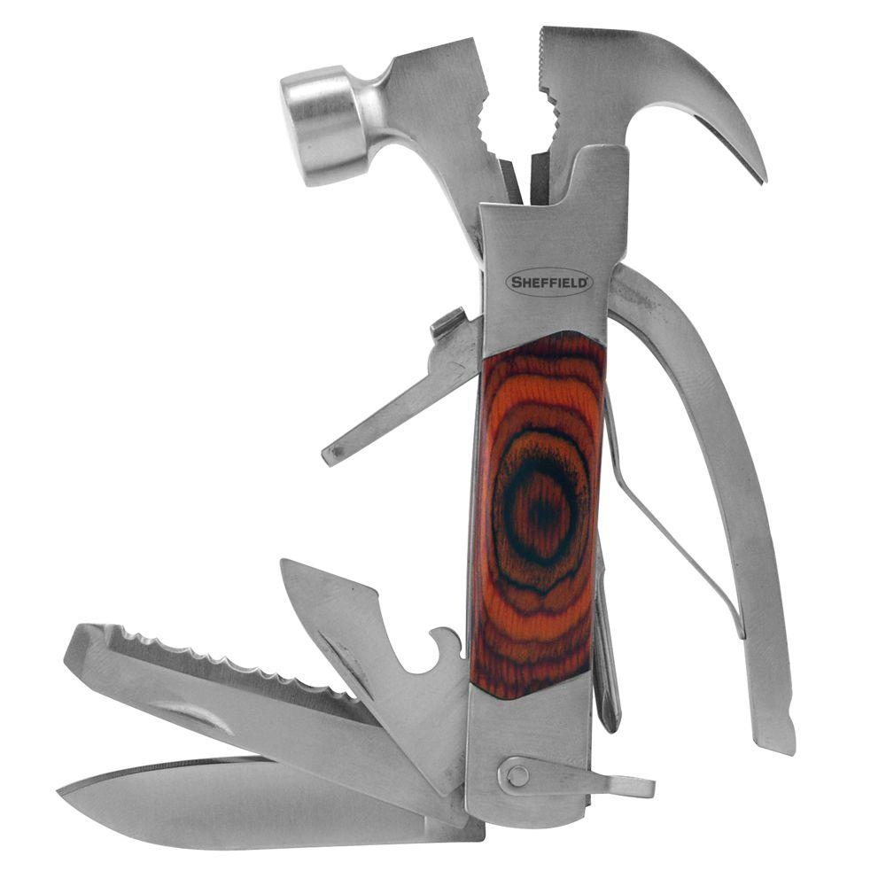
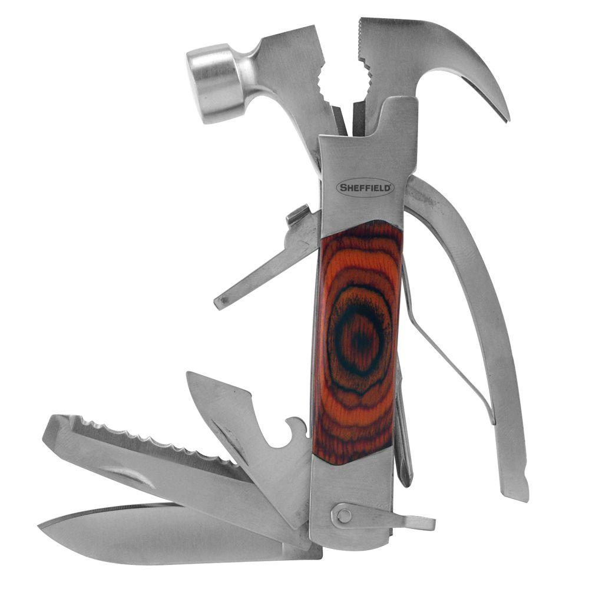

Your browser doesn't support the features required by impress.js,
so you are presented with a simplified version of this presentation.
For the best experience please use the latest Chrome,
Safari or Firefox browser.

Microservices Comunications
talk or listen?
Nikolay Petkov
What is monolith?
Normal application that try to be too many things at once, i.e.
Cover many different business domains and processes
Serve different teams in one organisation
Havie single domain model trying to fit all business perspectives
... other try to do all
What people say about it
I love it, there is only one application to deploy and monitor in
production. I have enough time for coffee and cigarets
I can create new client, initialise current account and credit card,
calculate the risk and score, transfer referal bonus and run 3
batches in single ACID transaction. Amazing!!!
The credit team ask me to add new creadit score. I found there is
already table SCORE. I'll just add 3 new columns to the other 56 and
its done. We already have tables for everithing you may need.
Actually its no so bad
Well done monolith has many
advanteges over the distributed by nature microservices
Simple in-process comunication, i.e. method/function calls
ACID transactions
Fast access to all data owned by the application
Easy error handling at framework or language level
Less complexity to deploy and monitor
Ice cream: Con's
Not so great in the Winter
If you're allergic to lactose/milk
Diet alternatives are not real ice cream
Crisps
Potatoes fried in oil and salted
Various flavors
Dips
Can be used as ingredient in subs (Cliff Huxtable style)
Crisps: Pro's
Simple yet tasty concept
Great for snack
Salty / spicy (not sweet)
Finger food
Diet alternatives are often ok
Crisps: Con's
Commonly not used as dessert
Not sweet
Apple pie
Apple's in a pie
Many recipes exist. (Grandma's is the best.)
Vanilla sauce or cream on top
Apple pie: Pro's
Great for dessert
Or just with a cup of tea or glass of milk
Best when warm
Apple pie: Con's
I'm allergic to apple (but a small slice is worth it)

 
